Run your entire school from one place.
Marks, report cards, transcripts, GCE-style mock results, fees, payroll, attendance and parent messaging — every role working from a single, bilingual system that lives on your own server.

Empowering Education, Simplifying Management
A capabilities overview · English & French
You've probably already solved this — the hard way.
Most schools have something: a spreadsheet one person maintains, a generic system imported from abroad, a locally-built tool that breaks when its author leaves, or a cloud service billed every month. They tend to share the same four complaints.
Marks in one place, fees in another, attendance in a book, payroll in a spreadsheet. Every cross-report is assembled by hand.
The grading is wrong, the report-card format is wrong, the terminology is wrong — and sequences don't exist in it.
The one who built the Excel or maintains the local tool. When they travel or leave, the school is stuck.
Cloud systems charge every month, and the data isn't yours. Stop paying, and you lose access to your own records.
It isn't whether you have a system. It's whether yours does everything, fits your school, and actually belongs to you.
One system. Every role. One source of truth.
InScola connects the people who run your school around the same data. A teacher enters a mark; the Vice-Principal sees it on the mastersheet; the report card prints it; the bursary's records sit alongside it. Nobody re-types anything.
Three reasons to switch to InScola.
The order a principal feels them in a live demo: separation first, integration second, ownership to close.
Does what your current system can't.
Mock results computed into GCE letter grades from marks already in the system. Transcripts pulled from years of academic history. Report cards and class council statistics generated in seconds — averages, rankings, conduct, council decisions and student photo filled in automatically. Nothing calculated by hand.

Regional mock results — GCE letter grades, A–U

Official-format transcript, exam column on the right
Mock results, transcripts and council decisions are produced the way the examination cycle actually requires — by the system, in the official format — instead of being compiled by hand on someone's desk each term.
One system. Everything talks to each other.
Most schools keep marks, fees, attendance and payroll in separate places that never connect. In InScola they live together and feed each other automatically — nothing re-entered, nothing cross-referenced by hand.
Academics, finance, conduct and payroll run in one deployment on one server — so a mark entered once reaches the mastersheet, report card and transcript, and a fee paid updates the books instantly. Nothing is re-entered, nothing falls out of sync.
Owned by you. No monthly fees.
On your server, in your building, with data you can back up to a USB drive and take home. The annual licence covers support and updates — but if you ever stop, the data doesn't disappear and the system doesn't stop working.
A typical cloud system
InScola
Staff connect to the server over your school network — by cable or Wi-Fi, no running wires to every desk. Optionally give teachers secure online access to enter marks from home, and choose your scope: the whole school, a school-only (academics) or a finance-only deployment.
The system, the data and the backups sit physically in your school — for less than a year of typical cloud fees, and yours to keep whether or not you renew.
Six roles. One system.
Each person signs in to a workspace built for their job — and only their job. The pages that follow show each in detail.
Academics, students, ID cards, users — and the whole school on one dashboard.
Enter marks for both sequences with autosave, imports from Excel, sees who needs help.
Mastersheets, coefficients, compliance, top/bottom, transcripts and report cards.
The front desk of fees — structures, invoices, payments, receipts, enrollment.
The back office — expenses, payroll, Profit & Loss, budget, statements and finance activity.
Attendance per stream, incidents with severity & sanction, automatic parent notices.
Sets up the school and keeps it running.
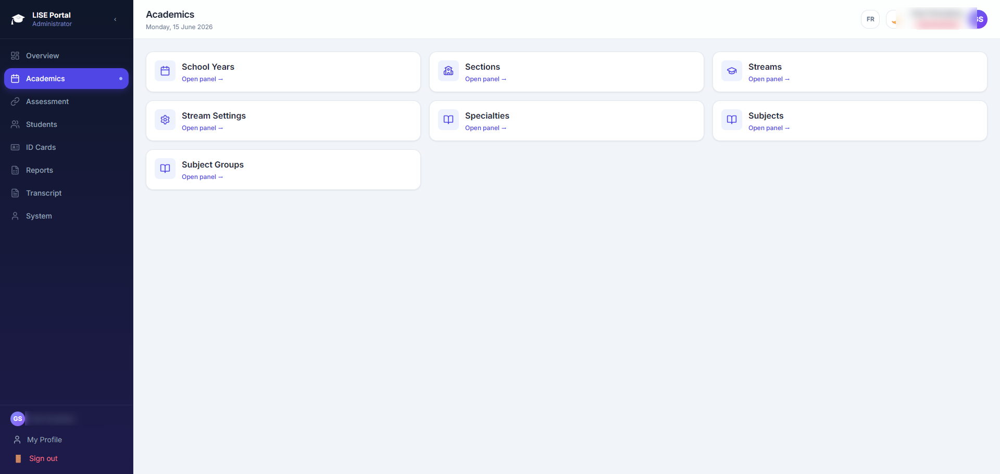
Academics — years, streams, subjects, specialties

Students — records, matricules & ID generation
Enters marks. Sees who needs help.
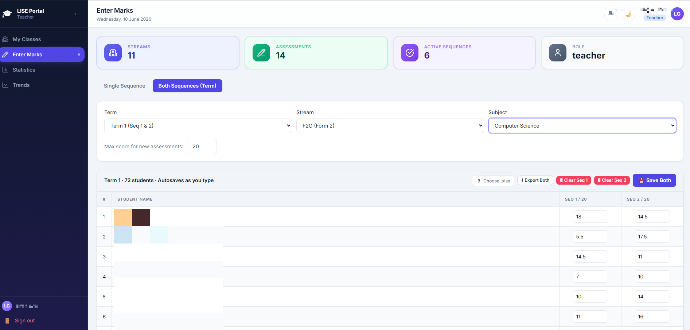
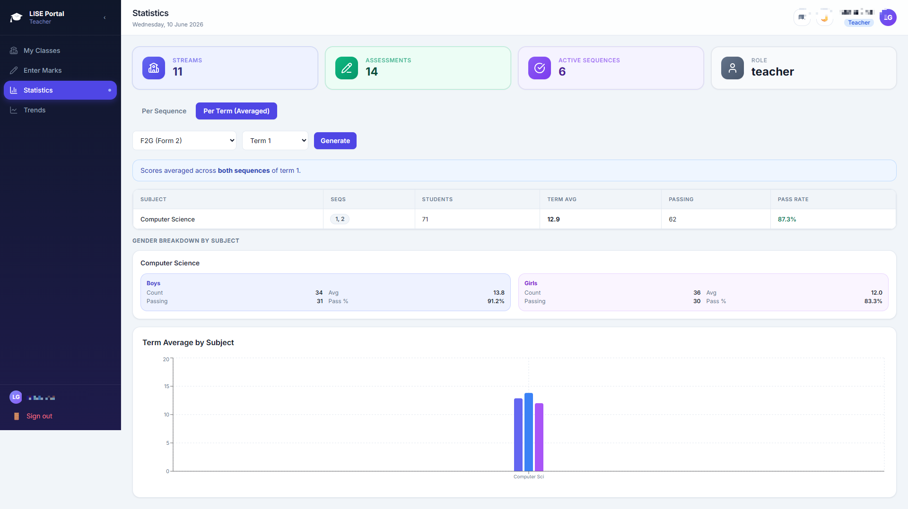
Per-subject statistics, pass rates & gender breakdown
Teachers can be given secure online access to enter marks remotely, while the rest of the system stays safely on your server.
Oversight without chasing paper.
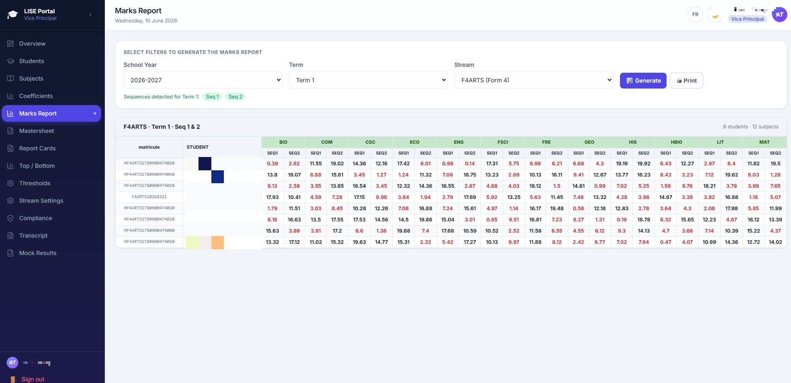
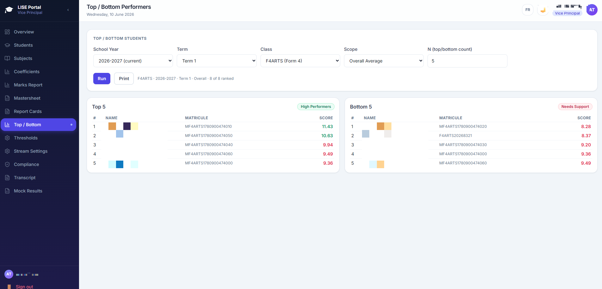
Top & bottom performers, instantly ranked
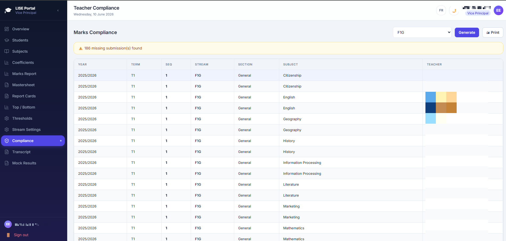
Compliance — exactly which submissions are missing
The front desk of fees.

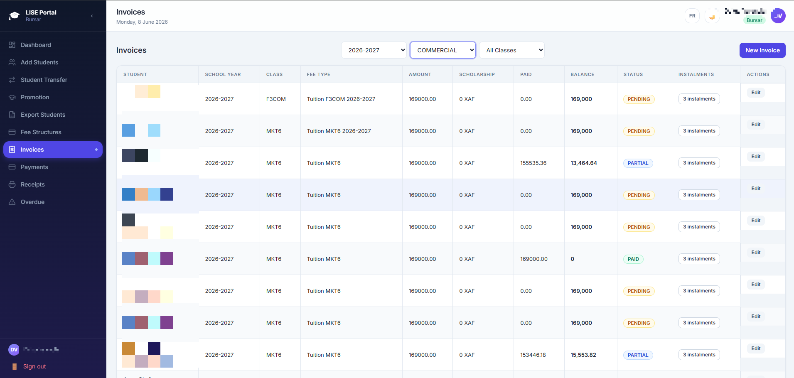
Invoices with instalments, balances & status
Prefer to start smaller? InScola can run as a finance-only deployment (the bursary alone) or a school-only deployment (academics without finance).
The school's full financial picture.
Where the bursar handles fees at the counter, the accountant sees the whole ledger — expenses, payroll, profit & loss, budget and statements.
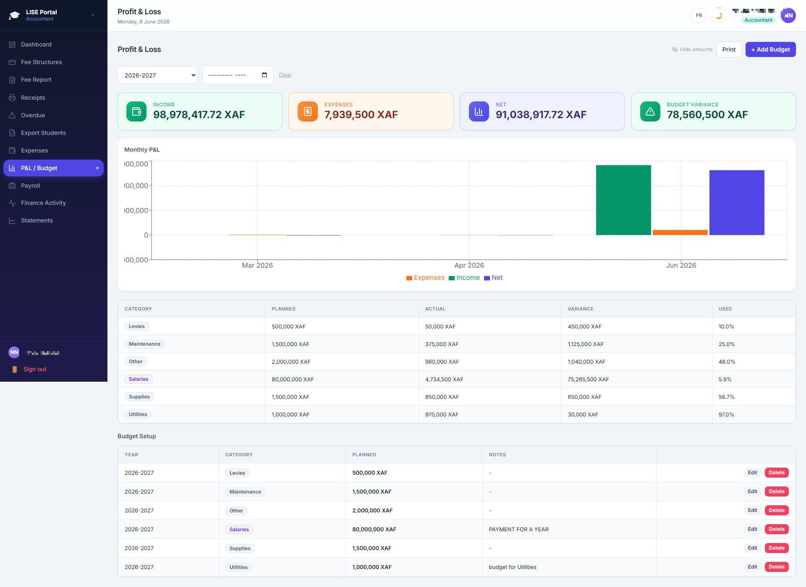
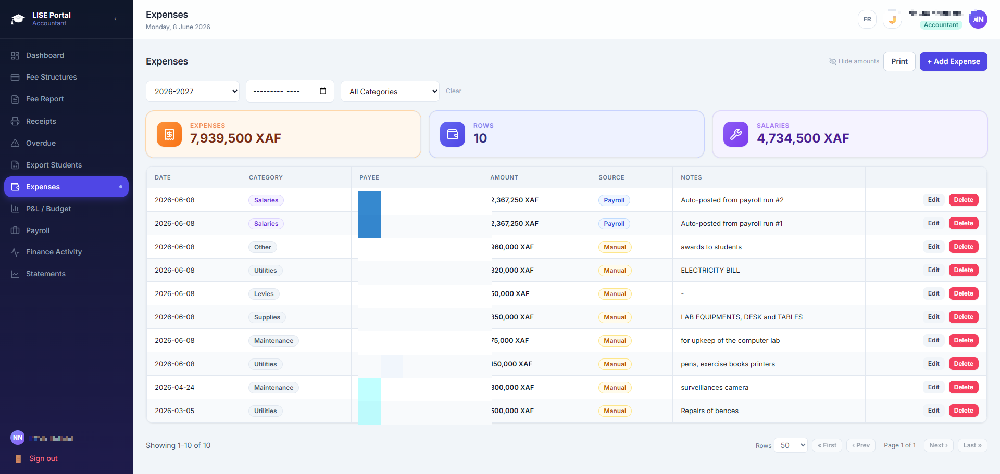
Expenses by category — payroll auto-posted
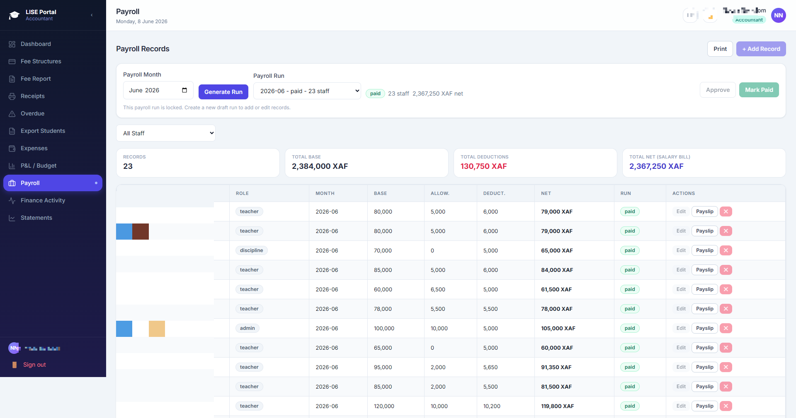
Staff payroll — allowances, deductions, net
A clear record of conduct.
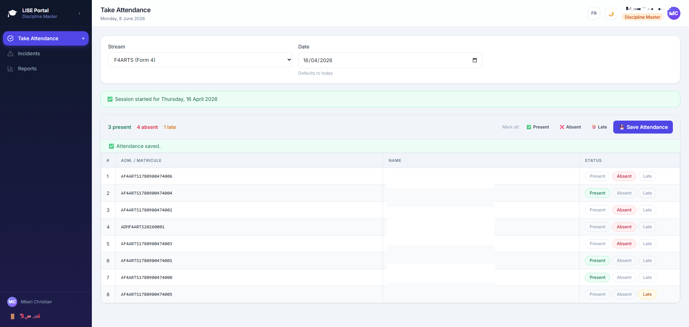
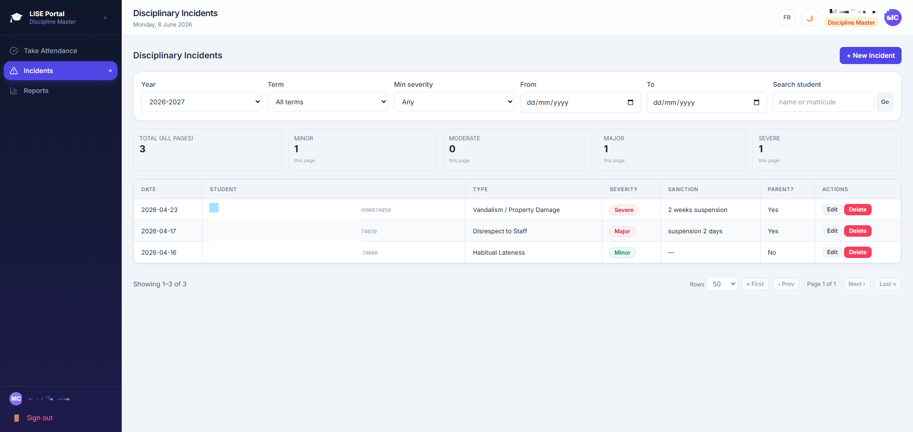
Incidents logged with severity, sanction & parent flag
Into a new year in minutes — not weeks.
When the year turns, most schools rebuild everything from scratch. InScola copies it forward — last year becomes the starting point for this one, so you update rather than re-enter.

Each previous-year enrollment stays intact, so last year's report cards and statements remain exactly as they were — for the records, and for any parent who asks.
Documents that carry your school's name.
Your header, your logo, your motto — on every page a parent or examiner will ever see. The report card follows the official Ministry of Secondary Education format.

Ministry-standard report card
Transcript — O-Level & A-Level
Student ID card

Payment receipt
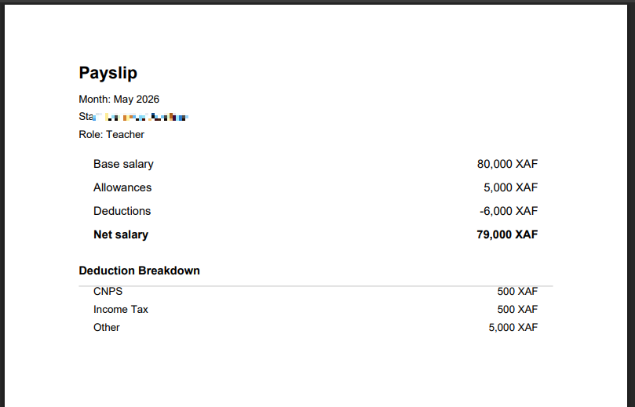
Staff payslip — allowances, deductions, CNPS & net
Regional mock slips in GCE A–U grades, ready for the notice board.
Clean printable class & enrollment lists for every stream.
Both languages. One click.
Anglophone and Francophone sub-systems under one roof. The interface and every printed document switch language instantly — no separate install, no second product.
One school may run Anglophone and Francophone streams side by side — each printing in its own language, from the same InScola.
Parents hear from the school — automatically.
Payments, absences, discipline and report cards each trigger an SMS or email to the guardian on file — using message templates you control, in English or French.
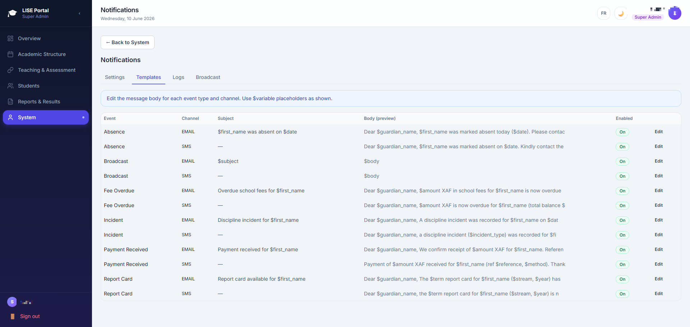
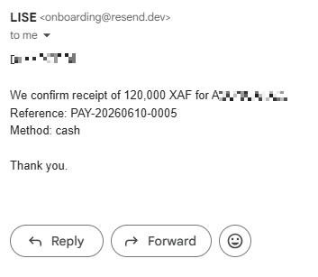
Payment received — email
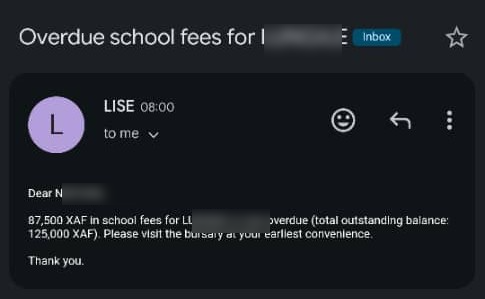
Overdue fees — email
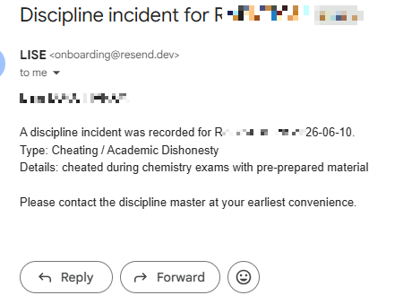
Discipline incident — email
Payment — SMS
Notifications run on a transparent credit system: see exactly how many SMS & email credits you've used, and top up when you choose. No surprise bills, no hidden metering.
Who sees what — and who changed it.
Student records, fee data and staff payroll are sensitive. InScola treats them that way.
Your school owns the system, the data, and the backups — and can see exactly who did what.
Everything InScola does.
- School years, sections, streams & specialties
- Subjects, subject groups & coefficients
- Marks entry by sequence & term, autosave
- Excel import / export of marks
- Mastersheets, marks reports & thresholds
- Top / bottom performers & statistics
- One-click promotion & year rollover
- Report cards with QR verification
- O-Level & A-Level transcripts
- GCE-style mock results (A–U)
- Student ID cards & class lists
- Payment receipts & invoices
- Staff payslips
- Fee structures & instalment plans
- Invoices, payments & receipts
- Overdue tracking & collection trends
- Expenses, Profit & Loss & budget variance
- Payroll, payslips & statements
- Finance-only or school-only deployment
- Attendance & incident register
- SMS & email notifications + templates
- Transparent notification credits & top-up
- Role-based accounts & audit trail
- Wired or Wi-Fi access; optional online marks entry
- Bilingual EN / FR throughout
Why schools switch to InScola.
| By hand / Excel | Generic software | InScola | |
|---|---|---|---|
| All-in-one | Separate tools | Academics or finance | Marks, fees, conduct & payroll |
| Everything connected | Re-typed by hand | Siloed modules | Feeds each other automatically |
| Mock results / GCE | Hand-compiled | Not supported | A–U, built in |
| Transcripts | Typed per cell | Wrong format | O-Level & A-Level, official |
| Grading system | Manual averages | “GPA”, equal subjects | /20, sequences, coefficients |
| Language | Whatever you type | English only | English & French |
| New-year setup | Rebuilt each year | Manual re-entry | Copied forward, then tweak |
| Where data lives | One fragile laptop | A server abroad | Your own server |
| Cost model | Hidden labour cost | Monthly, forever | One annual licence — yours |
| If you stop paying | — | Data locked / gone | Data stays with you |
A principal who has seen the things their current system can't do, watched the parts talk to each other, and heard that the data stays in the building they own — is no longer comparing vendors. They're asking when you can install it.
Live in a few days.
Most schools are running on InScola within a week — often before the next sequence.
Setup, training and ongoing support are included. You're never left alone with the software.
Book a live demo — at your school.
Nothing explains InScola like watching it do what your current system can't — with your own school's example in hand. We'll come to you.
Empowering Education, Simplifying Management
English & French · Made for Cameroon